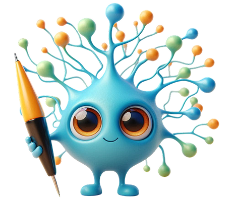

Nuestra sede física: un espacio diseñado para la creatividad y la colaboración.
Innov@ula es el nombre dado a nuestra novedosa sede física aún en construcción, ubicada en la FACES-ULA, espacio amplio, conformado por tres áreas diferenciadas por sus colores y dedicadas a la investigación, innovación así como la producción, con la finalidad de facilitar la socialización del saber, la interacción, el trabajo en equipo y el aprender haciendo.
Exploración. Interacción. Articulación. Actividades administrativas. Atención al público. Discusiones de proyectos.
Presentación y entrega de resultados de proyectos, actividades de difusión: elaboración de posters, entrevistas, charlas.
Diseño, experimentación, creación y desarrollo. Diseño de prototipos, experimentación, ensayos, desarrollo de productos y servicios comercializables.
